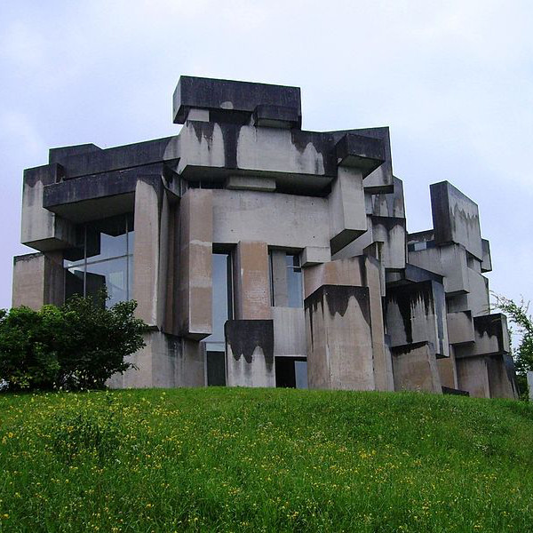

Primary notepad notes.
This widget uses the Content Display Picker to show multiple "pages" of notes.
Additional secondary notes.
Page 2 of my notepad.
Tertiary afterthought notes.
Welcome to the Bento Dashboard application boilerplate.
This space could be used for an introductory slider or some other summary content.
Primary notepad notes.
This widget uses the Content Display Picker to show multiple "pages" of notes.
Additional secondary notes.
Page 2 of my notepad.
Tertiary afterthought notes.

